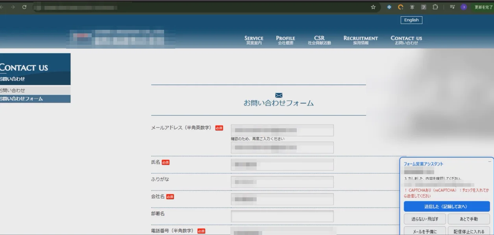

ササリーチ.
中小企業のための、フォーム営業代行。
営業文は、ぼくが届ける。あなたはボタンを押すだけ。
scroll ↓
> フォーム営業代行｜1ヶ月無料
> 契約は1ヶ月ごと、縛りなし
tokyo, koto-ku
sasareach.com
ササリーチとは
営業先の問い合わせフォームに、お客様の営業文を自動で送ります。探す。送る。記録する。テレアポで心が折れる毎日は、もう終わり。
RESULT
試した会社の約7割に、
送信できています。
東京の運送会社93社への送信テスト（2026年10月・約2週間）。送れなかった会社の多くは、フォームがない・営業お断り・ロボット確認ありの会社です。
WORRY
こんなお悩み、
ありませんか？
テレアポは断られてばかりで、心が折れる
本業が忙しくて、新しい営業まで手が回らない
営業を外に頼むと、高いし縛りが不安
その営業、
ササリーチにまかせてください。
HOW IT WORKS
ササリーチがやること
探す
業種と地域から、送り先の会社とホームページを集めます
送る
問い合わせフォームを見つけて、名前・連絡先・本文を入れて送ります
記録する
送れた会社、送れなかった理由、届いた返信をシートに残します
返信が届く
返信はお客様のメールに直接届きます。商談はお客様が。
① 全自動モード（メイン）
1台のPCで、
AIが3台同時に働きます。
問い合わせフォームを探す → 入力する → 送信する → 完了画面を確かめて記録する。ここまでを、人の手を使わずに進めます。1台ずつ送るより約3倍の速さです。夜も休みの日も送り続けます。
「営業お断り」と書いてある会社や、フォームのない会社は自動で飛ばします。
② 確認モード（仕上げ）
送れなかった会社は、
人の目で1社ずつ仕上げます。

「私はロボットではありません」のようなロボット確認があるフォームや、形が特殊なフォームは、全自動では送りません。入力まではAIが済ませて、最後のチェックと送信ボタンだけを人が押します。全自動では届かない会社にも送れます。
FLOW
リスト作りと設定は、こちらで。
お客様は、文面を書いてボタンを押すだけ。
オンライン面談一緒に
売りたいものと、送りたい相手（業種・地域）を決める（約30分）
送り先リスト作りこちら
業種と地域から、送り先の会社リストを作ってお渡し
PCに入れる一緒に
こちらで動作を確かめてからお渡し。画面共有でサポートしながら、お客様のPCに入れて設定
営業文を書くお客様
お客様の言葉で書くから、相手に刺さる。書き方のコツもお伝えします
送信お客様
ボタンを押すだけ。全自動で一気に送り、残りは確認モードで最後の1クリック
返信対応お客様
返信はお客様のメールに直接届く。商談はお客様が
RULES
送り方はお客様が決められます。
会社名を守るルールは変えません。
- 「営業お断り」の会社には送らない
- ロボット確認をすり抜けない
- うその答えを選ばない
- 断られた会社には二度と送らない
PRICE
続けるかどうかは、
結果を見てから。
2ヶ月目からの料金の目安
月4万円（税別）
1日300件まで送る場合
件数や送り先によって変わります。無料期間の結果を見てから、正式な料金をお伝えします。契約は1ヶ月ごと、縛りなし。
- 無料期間の結果をまとめてお伝え
- 続けるか・件数・送り先を決める
- 件数に合わせて料金をご提示
- 続けるときだけ、申込書を交わす
FAQ
よくある質問
本当に1ヶ月無料ですか？
2ヶ月目からの料金はいくらですか？
自分でやることは何ですか？
送信も全部まかせられますか？
会社の評判が悪くなりませんか？
2ヶ月目からの契約はどうなりますか？
COLUMN
noteで、フォーム営業の
本物の数字を書いています。
-
 2026.11.18個人事業主・フリーランスでもできるフォーム営業のはじめ方｜まずやる5つのこと「ひとりで仕事をしていて、新しいお客さんを探したい。でも営業の人を雇う余裕はない」。そんな個人事業主やフリーランスの方に、フォーム営業はぴったりの方法です。
2026.11.18個人事業主・フリーランスでもできるフォーム営業のはじめ方｜まずやる5つのこと「ひとりで仕事をしていて、新しいお客さんを探したい。でも営業の人を雇う余裕はない」。そんな個人事業主やフリーランスの方に、フォーム営業はぴったりの方法です。
-
 2026.11.15自分の営業は商談0件。それでも1ヶ月で4社がフォーム営業を任せてくれた話今回は、この1ヶ月のことを正直に書きます。自分の営業は、前向きな返事が0件でした。それなのに、1ヶ月で4社がフォーム営業を任せてくれました。
2026.11.15自分の営業は商談0件。それでも1ヶ月で4社がフォーム営業を任せてくれた話今回は、この1ヶ月のことを正直に書きます。自分の営業は、前向きな返事が0件でした。それなのに、1ヶ月で4社がフォーム営業を任せてくれました。
-
 2026.11.12フォーム営業で送れない会社は約4割だった｜フォームなし・営業お断りが多い理由と対策フォーム営業を始める前は、「リストの会社には全部送れるんだろう」と思っていました。でも実際にやってみると、送ろうとした会社の約4割には送れませんでした。
2026.11.12フォーム営業で送れない会社は約4割だった｜フォームなし・営業お断りが多い理由と対策フォーム営業を始める前は、「リストの会社には全部送れるんだろう」と思っていました。でも実際にやってみると、送ろうとした会社の約4割には送れませんでした。
1ヶ月無料
めんどうな営業は、
ぼくにまかせて！
リスト作りとPCへの設定は、こちらで行います。
お客様は、ボタンを押して返信を見るだけ。
カレンダーから、空いている日時を選ぶだけで予約できます。申込書を交わすまで、料金は一切かかりません。